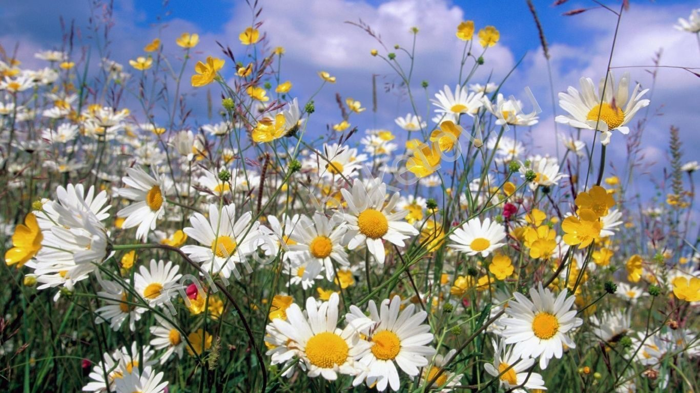

Про проєкт
Человечество на протяжении веков настолько очаровано цветами, что во многих странах им посвящены праздники, фестивали. Уже Древней Индии можно было попасть на фестиваль цветов, в Греции – день лилий и гиацинтов, в Болгарии – роз, в Германии – фиалок. Посетить такие праздники можно и сегодня, главное – знать, где и в какое время они проводятся. Символом божественной тайны считалась с давних времен королева цветов роза. По решению Конгресса, принятому в 1986 году, она является национальным цветком Америки. Каждая страна может поведать легенды и исторические факты, связанные с розами. В Древней Индии, принеся цветок правителю, любой человек мог просить об исполнении желания. Розовое масло в стране ценилось на уровне с золотом. Согласно преданию древних персов, изначально у розы были белые лепестки. Но однажды к кусту подлетел соловей и прижал один из бутонов к груди. Острые шипы растения пронзили сердце птицы, и на лепестки капнула кровь, окрасив их в красный цвет. В переводе с японского языка название цветка хризантема звучит как «солнце». Изображать ее допускалось лишь на одежде, которую носили члены императорской фамилии. И по сей день в стране восходящего солнца картинки с нанесенным растением считаются священными. Название «гладиолус» подарил цветку Плиний Старший, древнеримский писатель, обративший внимание на то, что он имеет сходство с оружием гладиаторов. Исходя из изложенного, имя цветка в переводе звучит как «меч». Не менее интересным цветком является лотос, который ценили жители Древнего Египта. Египтяне посвящали цветок Изиде, богине плодородия. А если во время разлива Нила у берегов можно было увидеть большое количество бутонов лотоса – это считалось хорошим знаком, сулящим большой урожай.
Красота цветов способна вдохновить человека на творчество. Древнегреческий естествоиспытатель и философ Теофраст цветочным венкам посвятил в своем научном трактате целую главу. Они упоминаются в произведениях Пушкина, Фета, Тютчева, Блока. Микроминиатюрист А. Кононенко, вдохновленный творчеством А. Пушкина, создал сборник его произведений на розовых лепестках, который впоследствии был подарен жене. Цветы можно найти на знаменитых полотнах Клода Моне, Пьера Жозефа Редуте. Упоминания о цветах можно найти и в Библии. По преданию, лилия появилась на свет из слез Евы, которая была изгнана из рая. Сегодня этот прекрасный цветок, наряду с розами, можно увидеть в роскошных свадебных букетах. А гвоздика была замечена на Голгофе, на месте, где стояла Пресвятая Богородица, глядя на страдания Иисуса.
Цветы – древнейший вид украшения. Из них в Древнем Риме и на Руси плели венки в качестве украшения жилья или для проведения торжеств и обрядов. На Ивана Купала у славян девушки пускали венки по воде в надежде узнать свое будущее. В Ирландии по окрасу растений можно было определить, где живут католики и протестанты, так как первые из них высаживали вокруг домов белоснежные цветы, а вторые – оранжевых оттенков. Цветы-любимцы можно увидеть на гербах разных государств. Так, японцы символом страны выбрали хризантему, ирландцы – клевер, швейцарцы – эдельвейс. Жители Китая верят в магические свойства пиона. Отдельные штаты Америки также имеют свои цветы-символы. Так в Индиане таким цветком признана незабудка, а в Огайо – красная гвоздика.
Много интересных тайн и историй хранят в себе цветы, и копилку знаний о них можно пополнять бесконечно благодаря появлению новых сортов и расцветок. Но, главное – цветы способны вдохновлять и дарить радость, поднимать настроение. Поэтому их можно дарить независимо от повода. Сегодня букет в подарок – это не просто цветы, завернутые в целлофан и украшенные яркой лентой. Мастерство флористов позволяет создавать роскошные цветочные композиции на свадьбу, День рождения, юбилей, женский праздник, которые уже сами по себе являются незабываемым подарком. Профессионалы студии флористики «Цветочный Волшебник» помогут создать интересный стильный букет независимо от мероприятия, доставку которого можно заказать в любой из районов Харькова.
Знаете, что в средние века был придуман тайный язык цветов? За каждым цветком закреплялось определенное значение, что позволяло влюбленным обмениваться посланиями, недосягаемыми для чужих ушей. Вручая избраннице веточку цветущей вишни, ей без слов признавались в любви. Скромные синие фиалки красноречиво свидетельствовали о верности, а букет из алых роз приравнивался к предложению руки и сердца.